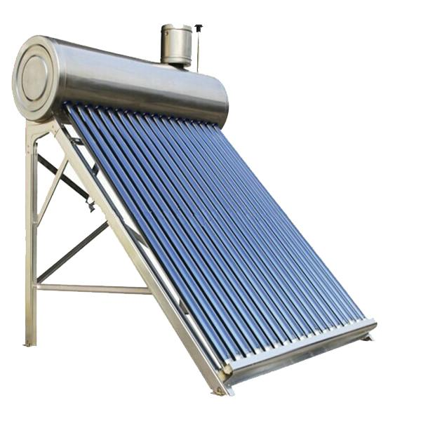

Desde Go Neutral, buscamos reducir la huella de carbono utilizando energías renovables (solar térmica y fotovoltaica – sistemas on grid, off grid e híbrido) y optimizando el uso de la energía (eficiencia energética)

El termotanque solar es un equipo diseñado para absorber la radiación solar, calentar agua y almacenarla en un tanque para poder administrarla durante el día. Su funcionamiento se basa en el principio físico llamado termosifón, fenómeno que se produce en los fluidos cuando se calientan.
Desde Go Neutral, buscamos reducir la huella de carbono utilizando energías renovables (solar térmica y fotovoltaica – sistemas on grid, off grid e híbrido) y optimizando el uso de la energía (eficiencia energética)
En el sistema ON-GRID, según tu distribuidora se debe realizar la reserva de potencia y solicitud del medidor bidireccional para poder inyectar en la red y obtener un beneficio económico adicional.

Santiago del Estero 81 - Sunchales - Provincia de Santa Fe - CP: 2322
Telefono: +54 3493 461886